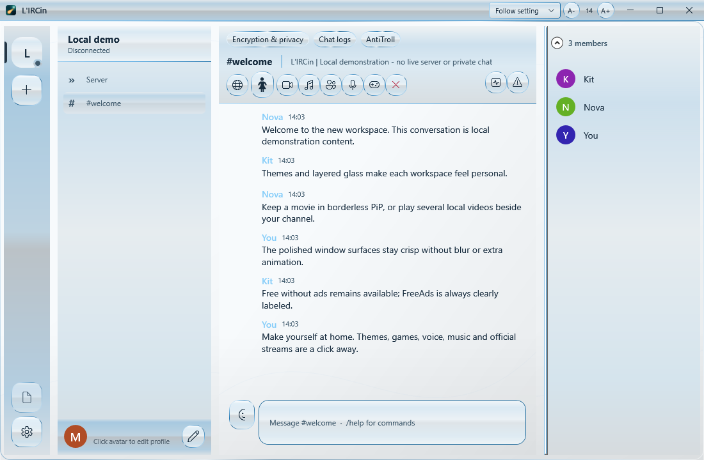

THE GALLERY
Glass foundations.
Twenty foundations reshape rails, panels, bevels and title bars; palettes set the color. Every image is a genuine Windows capture with fictional local demo content. Desktop blur depends on Windows composition settings.
New in 1.2.31
The Atelier trio
Graphite Atelier, Brushed Platinum and Smoked Aero follow a strict brief: desaturated tints, 4–6 px radii, layered depth, a one-pixel inner top bevel, semi-transparent rims, 150 ms ease-out hover and system fonts. Captures arrive with the next gallery refresh.
Graphite Atelier
Brushed Platinum
Smoked Aero


